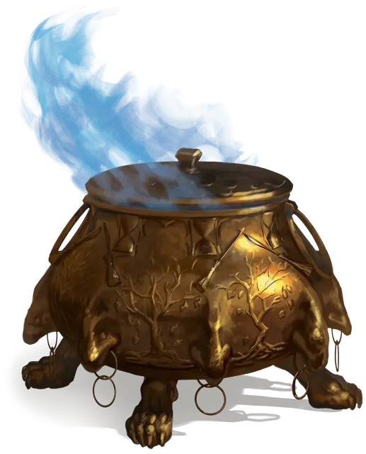

Котёл Иггвилв
Iggwilv’s Cauldron
Чудесный предмет, артефакт (требуется настройка заклинателем)

Иггвилв изготовила этот чудесный котёл с помощью своей приемной матери, архифеи Бабы Яги.
Две формы котла. Только Иггвилв или Баба Яга могут изменить котел из одной формы в другую (действием, касаясь его), они могут использовать это действие будучи не настроенным на предмет. В своей первой форме котел сделан из чистого золота и снаружи украшен тиснением с изображениями деревьев с голыми ветвями, падающими листьями и метлами. Во второй форме котел сделан из железа и снаружи украшен рельефными изображениями летучих мышей, жаб, кошек, ящериц и змей—по восемь особей каждого животного. В любой форме котел имеет около 3-х футов в диаметре и имеет отверстие шириной 2 фута, круглую крышку с формованной ручкой наверху и восемь когтистых лап, которые не дают ему опрокинуться. Котел весит 80 фунтов, когда он пуст, и вмещает до 100 галлонов жидкости.
Настройка. Любое гуманоидное существо, настроенное на котел, должно преуспеть в спасброске Телосложения Сл 15 или состариться до дряхлого состояния. В этом состоянии скорость существа уменьшается вдвое, дальность его зрения и слуха уменьшается до 30 футов, и он получает помехи на все проверки характеристик, броски атак и спасброски. Существо достигнет конца своей естественной продолжительности жизни через 3к8 дней. Только заклинание исполнение желаний [wish] или божественное вмешательство могут обратить вспять этот эффект состаривания существа.
Три карги могут настроиться на котел одновременно, при условии, что они сформировали шабаш. Если шабаш распадается, настройка заканчивается для всех трёх ведьм.
Случайные свойства. Независимо от формы, которую он принимает, котел обладает следующими случайными свойствами:
- 1 малое положительное свойство
- 1 малое отрицательное свойство
Золотой котел. Золотой котел обладает следующими свойствами:
- Если в котёл налить воды и мешать в течение 1 минуты, она превращается в сытное, горячее рагу, которым можно накормить до 4-х человек. Тушеное мясо остается горячим, пока находится в котле, и охлаждается естественным образом после его вынимания. Снаружи котел остается безопасным для прикосновения, несмотря на жар тушеного мяса.
- Если в котёл налить вино и помешивать в течение 10 минут, оно превращается в волшебный эликсир, которого хватит на усиление четырёх человек за каждый галлон использованного вина. Любое существо, которое впитывает эликсир, получает 10 временных хитов. Любой эликсир, который не был выпит в течение 1 часа, исчезает. После использования этого свойства котла, оно не может быть использовано снова до следующего рассвета.
- Когда котел наполнен 90 галлонами воды, смешанной с 10 галлонами вина, его можно использовать в качестве заклинательной фокусировки для заклинаний школы Прорицания. Когда подобное заклинание накладывается с использованием котла в качестве фокусировки, цель заклинания автоматически проваливает спасбросок, и заклинание срабатывает, даже если его заклинатель и цель находятся на разных планах существования. Когда заклинание заканчивается, вся жидкость в котле исчезает.
- Погружение прутьев обычной метлы в наполненный водой котел превращает метлу в метлу полета [broom of flying] на 3 дня. После использования этого свойства котла, оно не может быть использовано снова до следующего рассвета.
Железный котел. Железный котел обладает следующими свойствами:
- Действием вы можете закричать в пустой котел, который волшебным образом призывает рой летучих мышей [swarm of bats], вылетающих из котла и действующих сразу после вас в порядке инициативы. Рой подчиняется вашим командам и исчезает через 1 минуту, если к тому времени он не был уничтожен. После использования этого свойства котла, оно не может быть использовано снова до следующего рассвета.
- Если в котел налить не менее 1 галлона крови и помешивать в течение 1 минуты, она превращается в облако безвредного чёрного дыма, который вырывается из котла и быстро рассеивается. В то же время все гуманоидные существа в определенном радиусе от котла теряют сознание на 1 час, за исключением тех, кто настроен на котел или невосприимчив к очарованию. Радиус действия эффекта составляет 100 футов на каждый галлон использованной крови. Бессознательное существо пробуждается, если оно получает урон или если кто-то использует на тряску или пощечину. После использования этого свойства котла, оно не может быть использовано снова до следующего рассвета.
- Привязывание мертвой лягушки или жабы к концу обычной ветки и погружение ее в наполненный водой котел превращает ветку в волшебную палочку превращения [wand of polymorph] с 3 зарядами. Эта палочка не может перезаряжаться и рассыпается в прах, когда расходуется её последний заряд. После использования этого свойство котла, оно не может быть использовано снова в течение 8 дней.
- Если вы потратите 1 минуту, прикасаясь к котлу рогом единорога, читая стихотворение под названием «Котел королевы ведьм» (см. ниже), все существа в радиусе 1000 футов от котла, кроме тех, которые настроены на него, застывают во времени. Замороженное во времени существо недееспособно, не может двигаться или говорить, не стареет и не осознает своего окружения или течения времени. Более того, его нельзя ни передвинуть, ни каким-либо образом нанести урон, даже воздействием какой - либо другой магии. Все остальные условия и воздействия на существо подавляются до тех пор, пока оно не перестанет быть замороженным во времени.
- Уничтожение котла, отправка его на иной план существования или прикосновение к нему рогом единорога в течение 1 минуты во время чтения «Котла Королевы ведьм» оканчивает эффект замораживания времени для всех существ. Эффект также заканчивается на любом существе, которое вступает в контакт с преградой магии [antimagic field] или которого касаются рогом единорога.
Уничтожение котла. Котел-это Средний объект имеющий КД 19, 80 хитов и иммунитетом к урону от любых источников, кроме урона полученного от языка пламени [flame tongue]или морозного клинка [frost brand]. Уменьшение хитов котла до 0 с помощью подобного оружия разбивает котел на восемь частей примерно одинакового размера, после чего все текущие эффекты, создаваемые котлом, заканчиваются, поскольку он теряет свою магию.
Разрушение котла Иггвилв приводит к тому, что все карги в мультивселенной теряют особенность «Совместное колдовство» получаемую в результате пребывания в ковене.
Восстановление котла. Если все восемь частей разбитого котла находятся в пределах 5 футов друг от друга, заклинание исполнение желаний [wish] может собрать их, восстанавливая котёл и все его свойства. Восстановление котла также восстанавливает «Совместное колдовство» шабаша карг по всей мультивселенной.
Котёл королевы ведьм
Пусть старо как мир понятье.
Порча ,корча, приворот.
Практикуем мы к проклятью современнейший подход
Формула двойного зла
Трижды ночь плюс дважды мгла.
Два кусочка станьте целым.
Пламя делай свое дело.
И варись, варись.
Вуншпунш!
(перевод стиха немного отличается от оригинала)